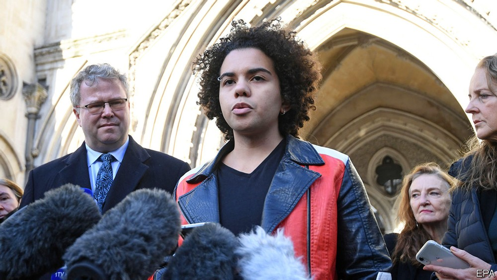
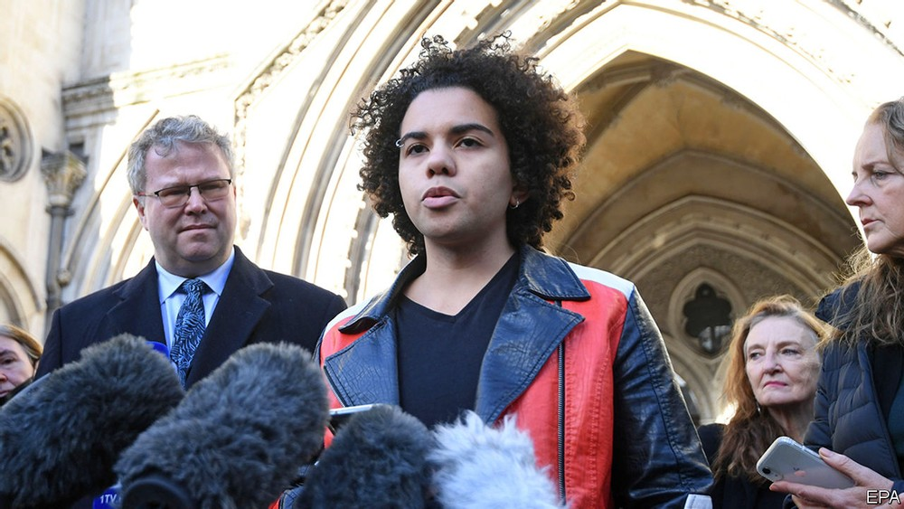
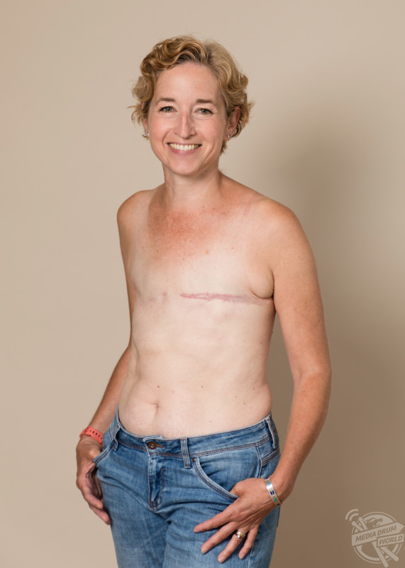
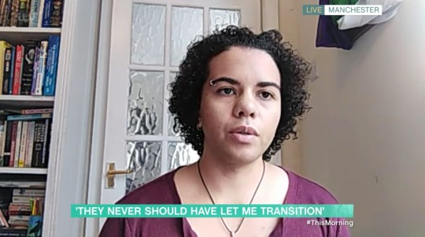
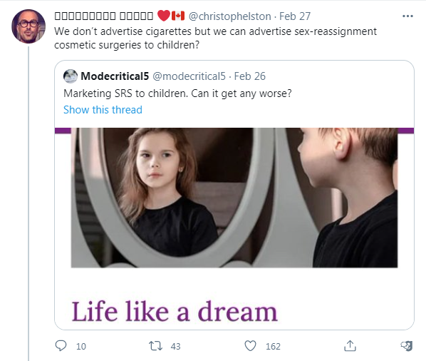
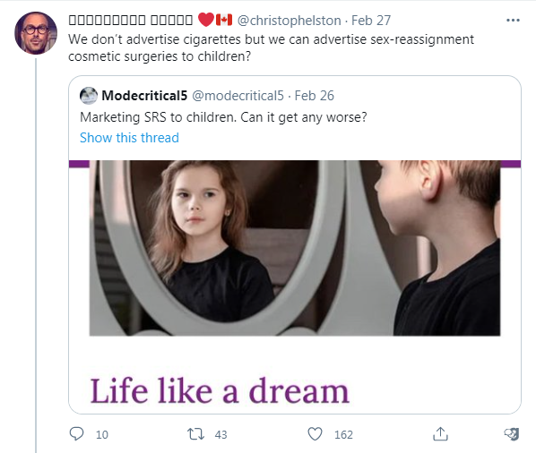
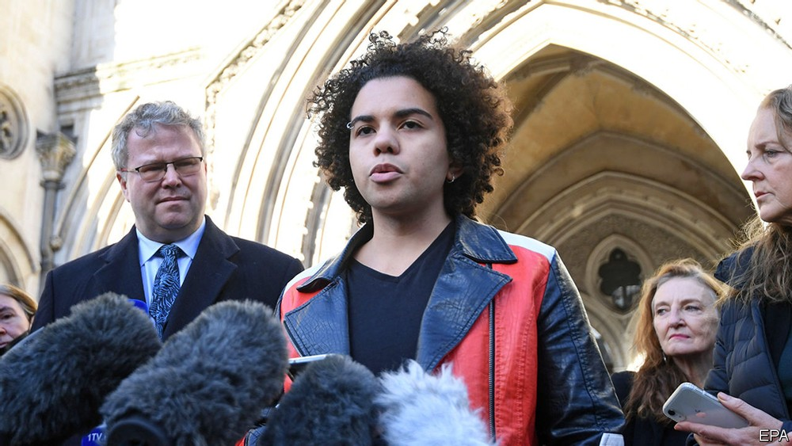
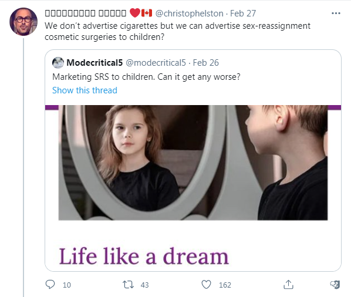

Chris Elston Puberty Blockers Campaign
March 2nd, 2021
Chris Elston, a South Surrey, British Columbia, father of two, has been raising funds for his campaign to raise awareness about a new Pervertism affecting children near you. Okay, the malicious anti-social perverts pushing this don't call it pervertism, they just call it "child trannies." Well, they don't call it that either, but that's what it is.
 More specifically, as we've seen in the US with that "Rachel" Levine monster, these truly repulsive creatures want to start doing "transgenderism," with children. They can't actually do the surgery on minors, thank god, but what they can do, unbelievably, is "puberty blockers." Basically the way it goes is like this. Remember that girl our age, who was cutting herself. Or maybe just the goth girl who didn't fit in? Well now the tranny-industrial complex has got their hooks in those vulnerable children, and they're putting them on "puberty blockers." These "block puberty," although as you might have guessed, this is permanent. If a girl goes on massive amounts of testosterone, grows a beard, it doesn't matter how much she regrets the decision 3 years later, the bone structure has changed, the facial hair has changed.

More specifically, as we've seen in the US with that "Rachel" Levine monster, these truly repulsive creatures want to start doing "transgenderism," with children. They can't actually do the surgery on minors, thank god, but what they can do, unbelievably, is "puberty blockers." Basically the way it goes is like this. Remember that girl our age, who was cutting herself. Or maybe just the goth girl who didn't fit in? Well now the tranny-industrial complex has got their hooks in those vulnerable children, and they're putting them on "puberty blockers." These "block puberty," although as you might have guessed, this is permanent. If a girl goes on massive amounts of testosterone, grows a beard, it doesn't matter how much she regrets the decision 3 years later, the bone structure has changed, the facial hair has changed.
Kiera Bell
One particularly disgusting case involved the above girl. Born as a girl, she started fealing suicidal at age 16, was talked to at her most vulnerable by these creeps, who convinced her that she was a boy. She was given "puberty blockers," then testosterone, then a double mastectomy. Yes, that's right, a double mastectomy. For those of you who don't know what a mastectomy is, here's a picture with a woman who got one for presumably normal reasons.
Poor woman
There are many valid medical reasons for a mastectomy, or at least one, breast cancer. A suicidal 16 year old girl who's been told that she's a boy and that her problems with herself can be solved by surgically removing her breasts. I'm not afraid to say that if this was done to someone I know personally I would be perfectly happy to spend the rest of my life behind bars, or die in a shootout with police in order to bring justice to all those involved. From the doctors performing the surgery, to the "experts," whispering into the childs ear.

Well, Keira then "detransitioned," only to find out that "puberty blockers," are not the "pause," that the child abusers pretend they are. They're permanent. For the record, I don't want anyone doing the whole "LOL Mutt," thing, this is legitimate survivor of abuse.

Chris Elston
Anyway, Chris Elston, the father above, has been going on a tour all across Canada raising awareness about this new form of child abuse. The Keira Bell case happened in England, and she actually got the English court to rule that no, children cannot consent to puberty blockers. That's nowhere near good enough, but at least it's something. I guess maybe they can rule that children cannot consent to sex after, but that pedophiles don't need to be punished.
I've seen lots of media of Elston on twitter, and I'm happy for him that he managed to survive the recent purge, although I did not. Some of the videos he has up are extremely encouraging/funny, and it sort of brings me back to ~2014-2015 "Triggered SJW's," only with far more serious implications. Here's one video, so you can get the gist of it.
 It's also worth noting that back when I had my account, bcgoynews, @okg_shekel, chris would engage with me, like my tweets, even if unrelated, and also tweeted about "anti-racism," curriculum in Langley schools. He sort of had that hint of Cuckservative "these WOKE people are going to far," but I can chalk that up to simply normal people being denied the vocabulary to defend themselves. He's definitely not some astroturfed grifter.

It's so weird to see someone in my exact geographical area, South Surrey, being active in something political that I completely approve of. I think he's an inspiration, considering how he's started this mostly by himself and with no money to begin with, only concern for his two daughters and others. Some day, we will give this man an award.
It's also worth noting that back when I had my account, bcgoynews, @okg_shekel, chris would engage with me, like my tweets, even if unrelated, and also tweeted about "anti-racism," curriculum in Langley schools. He sort of had that hint of Cuckservative "these WOKE people are going to far," but I can chalk that up to simply normal people being denied the vocabulary to defend themselves. He's definitely not some astroturfed grifter.

It's so weird to see someone in my exact geographical area, South Surrey, being active in something political that I completely approve of. I think he's an inspiration, considering how he's started this mostly by himself and with no money to begin with, only concern for his two daughters and others. Some day, we will give this man an award.

More specifically, as we've seen in the US with that "Rachel" Levine monster, these truly repulsive creatures want to start doing "transgenderism," with children. They can't actually do the surgery on minors, thank god, but what they can do, unbelievably, is "puberty blockers." Basically the way it goes is like this. Remember that girl our age, who was cutting herself. Or maybe just the goth girl who didn't fit in? Well now the tranny-industrial complex has got their hooks in those vulnerable children, and they're putting them on "puberty blockers." These "block puberty," although as you might have guessed, this is permanent. If a girl goes on massive amounts of testosterone, grows a beard, it doesn't matter how much she regrets the decision 3 years later, the bone structure has changed, the facial hair has changed.
It's possible I'm still getting embedding errors. If so, please click on that tweet, the 2:20 of your time is very much worth it. Honestly the guys account is pretty much a mix of enraging shit, then hilarious interactions with extreme non-player-character disorder people. Many of these interactions need to be seen to be believed.I hope everyone understands how widespread this ideology has become, and it overwhelmingly affects young females.
— 🅑🅘🅛🅛🅑🅞🅐🅡🅓 🅒🅗🅡🅘🅢 ❤️🇨🇦 (@christophelston) February 14, 2021
It has completely taken over with our youth and young adults.
And of course they don't know about the Keira Bell ruling. Our media is complicit in this. pic.twitter.com/J1MMucdSst
It's also worth noting that back when I had my account, bcgoynews, @okg_shekel, chris would engage with me, like my tweets, even if unrelated, and also tweeted about "anti-racism," curriculum in Langley schools. He sort of had that hint of Cuckservative "these WOKE people are going to far," but I can chalk that up to simply normal people being denied the vocabulary to defend themselves. He's definitely not some astroturfed grifter.

It's so weird to see someone in my exact geographical area, South Surrey, being active in something political that I completely approve of. I think he's an inspiration, considering how he's started this mostly by himself and with no money to begin with, only concern for his two daughters and others. Some day, we will give this man an award.